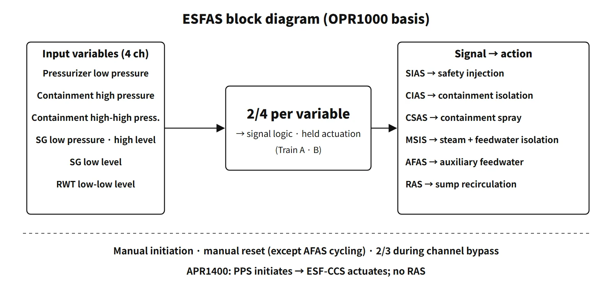

Systems & Equipment · C-SY-011
Engineered Safety Features Actuation Signals (ESFAS) — Which Variable Wakes Which Safety System
Which process variable starts which engineered safety feature, how the logic holds and bypasses the signals, and how the APR1400 splits initiation from actuation.
The engineered safety features actuation system (ESFAS) is a safety-class instrumentation and control function that automatically actuates engineered safety features (ESF) such as safety injection, containment isolation, containment spray, main steam isolation and auxiliary feedwater when selected process variables reach their setpoints. Its purpose is to keep the consequences of design basis accidents (DBAs) within the acceptance criteria. Its outputs are the engineered safety features actuation signals.
In CE-type plants (OPR1000, APR1400) the ESFAS initiation functions sit in the four-channel plant protection system (PPS) together with the reactor trip functions. This note focuses on the types of signal, their inputs, what they actuate, their logic, and how they relate to accidents.
Principle and mechanism
The signal chain and its logic
Each variable is measured in four channels, and bistables compare the measurements with the setpoints. When two of the four channels for the same function trip (2/4), an initiation signal is produced. It then passes through the Train A and B actuation logic to operate pumps, valves and breakers.
- Selective 2/4: the OPR1000 forms the 2/4 logic from six logic combinations (AB, AC, AD, BC, BD, CD) and initiation relays. In the APR1400 the ESF-CCS group controllers apply selective 2/4 again to the signals from the four PPS divisions.
- Completion of protective action (lockout, latch): once initiated, the actuated state is held until manually reset, even if the variable recovers. The exception is AFAS. The OPR1000 AFAS has no lockout, so the auxiliary feedwater valves open and close automatically according to SG level; the pumps keep running after starting until the operator stops them. The APR1400 likewise excludes only the cycling part of AFAS from the latch.
- Manual initiation: every signal can be initiated with system-level switches on the safety console in the main control room. The APR1400 also has MSIS switches in the remote shutdown room.
- Operating bypass: to prevent unnecessary SIAS and CIAS during normal cooldown and depressurization, only the pressurizer low-pressure input is bypassed. The bypass can be applied only at low pressurizer pressure and is removed automatically when pressure rises again; in the APR1400 (DCD Section 7.3) it can be set at or below 400 psia and is removed automatically at 500 psia or above, and between the two a bypass already in place is kept. The containment high-pressure input is never bypassed.
- Channel bypass: removing one channel for maintenance or testing turns 2/4 into 2/3. Bypassing two or more channels of the same variable is prevented administratively, and overlapping whole-channel bypasses are prevented by interlock.
- Pressurizer low pressure and SG low pressure have variable setpoints. During cooldown the operator can lower the setpoint to follow the pressure, and it rises automatically when pressure increases.
The six NSSS-ESFAS signals of the OPR1000
The OPR1000 counts AFAS-1 and -2 as one function group, giving six signals (SIAS, CIAS, CSAS, MSIS, AFAS, RAS). The input variables of each signal are combined with OR: when two of the four channels of any one variable trip, the signal is generated by that variable. The setpoint values are unit-specific and are given in each unit's technical specifications; the APR1400 nominal values are listed below.
| Signal | Input variables | Actuates |
|---|---|---|
| SIAS safety injection | Pressurizer low pressure, containment high pressure | High- and low-pressure safety injection pumps, charging pumps, SI valves, EDG start, containment cooling |
| CIAS containment isolation | Same two variables as SIAS | Isolation valves on containment penetration piping |
| CSAS containment spray | Containment high-high pressure | Spray pumps and spray valves; isolation of RCP component cooling water and seal injection |
| MSIS main steam isolation | SG low pressure, SG high level, containment high pressure | Main steam and main feedwater isolation valves of both SGs; sampling and blowdown isolation |
| AFAS-1/-2 auxiliary feedwater | Low level in each SG (blocked if that SG is judged ruptured) | Starts auxiliary feedwater pumps and opens valves to the intact SG |
| RAS recirculation | RWT low-low level | Opens sump isolation valves, stops low-pressure safety injection pumps |
![Matrix of six NSSS-ESFAS signals with OPR1000 and APR1400 columns: SIAS and CIAS on pressurizer low pressure (APR1400 1,810 psia) or containment high pressure (1.9 psig); CSAS on containment high-high pressure (APR1400 20.03 psig); MSIS on SG low pressure (855 psia), SG high level (90 % NR) or containment high pressure (1.9 psig); AFAS on SG low level (25 % WR); RAS on RWT low-low level in the OPR1000 (none in the APR1400 because of the IRWST); with actuated equipment for each, an image of a pump and motor-operated valve, and a card on the 2-of-4 initiation logic](../../assets/images/concepts/c-sy-011-esfas-actuation-signals/fig1-esfas-signal-matrix.webp)
The SIAS and CIAS inputs are shared with reactor trip signals, so in a LOCA reactor trip, safety injection and isolation occur almost simultaneously. If the pressure difference between the SGs is large, AFAS treats the lower-pressure SG as ruptured and does not feed it. Feeding a ruptured SG would continue to overcool the primary side and keep mass and energy flowing out through the break.
BOP-ESFAS signals are actuated by radiation monitor inputs: main control room emergency ventilation and filtration (CREVAS), fuel building emergency exhaust (FBEVAS), and containment purge isolation (CPIAS).
What it means in a plant
APR1400 — the PPS initiates, the ESF-CCS actuates
In Section 7.3 of the APR1400 DCD (Rev. 0) the NSSS-ESFAS signals are the six SIAS, CSAS, CIAS, MSIS, AFAS-1 and AFAS-2. The names are almost the same as in the OPR1000, but the setpoints, actuated equipment and implementation differ, and there is no RAS: the water source, the IRWST, is inside containment, so there is no need to switch suction. The BOP-ESFAS signals are FHEVAS, CPIAS and CREVAS.
- Nominal setpoints: SIAS and CIAS pressurizer low pressure 1,810 psia and containment high pressure 1.9 psig; CSAS 20.03 psig; MSIS SG low pressure 855 psia and SG high level 90 % NR; AFAS SG low level 25 % WR.
- SIAS starts the spray pumps in advance, and CSAS opens the spray headers.
- All NSSS-ESFAS signals are initiated even if two PPS divisions lose power (fail-safe).
- Response-time requirements are 40 s or less for safety injection and 6.35 s or less for MSIV closure.
From the PPS local coincidence logic (LCL, 2/4), the signals go over safety-class data links to the ESF-CCS, a four-division digital system separate from the PPS. Group controllers (GC) handle selective 2/4 and latching, loop controllers (LC) handle component-level control logic, and the component interface modules (CIM) handle the priority between manual and automatic commands.
![APR1400 signal chain: PPS sensors in four channels, bistable processors and local coincidence logic 2-of-4, a safety-class data link to the ESF-CCS group controller (selective 2-of-4 and latch), loop controller and component interface module, then pumps, valves and breakers, with manual system-level switches, the EDG load sequencer and DPS signals; below, a pressurizer pressure axis from 0 to 2,500 psia showing the operating bypass settable at or below 400 psia and removed automatically at 500 psia, the SIAS and CIAS nominal setpoint at 1,810 psia and normal operation at 2,250 psia](../../assets/images/concepts/c-sy-011-esfas-actuation-signals/fig2-esf-ccs-chain-bypass.webp)
Loss of offsite power and load sequencing
Most ESF loads are large motors, so if the accident coincides with a loss of offsite power (LOOP) they must be loaded onto the emergency diesel generators (EDGs) in steps. The APR1400 puts this load sequencer in each ESF-CCS division. When two of four undervoltage relays on a Class 1E bus actuate, the EDG starts and large loads are shed. After the EDG breaker closes, an eight-step counter connects the load groups one by one. SIAS, AFAS and CSAS also start the EDGs. If offsite power is available, the EDGs stand by unloaded and the loads start in sequence on offsite power. The design ensures that the accident loads enter at the next step whether the accident comes before, with or after the LOOP.
Protection against digital common-cause failure
If the PPS and ESF-CCS fail together through a software common-cause failure, automatic ESF actuation is lost. The diverse protection system therefore backs up AFAS and, in later units, SIAS.
Signals and design basis accidents
The table shows the representative signals for each accident. Whether, and in what order, they actually occur depends on whether each variable reaches its setpoint.
| Design basis accident | Main signals |
|---|---|
| Large and small LOCA | SIAS and CIAS; CSAS for a large LOCA; later RAS in the OPR1000 |
| Main steam line break (MSLB) | MSIS (SG low pressure, containment high pressure), SIAS, AFAS to the intact SG, CSAS possible for a break inside containment |
| SG tube rupture (SGTR) | SIAS (pressurizer low pressure), AFAS; the ruptured SG is isolated by high-level MSIS or manually |
| Loss of feedwater, feedwater line break | AFAS |
| Fuel handling accident | FHEVAS and CPIAS |
Regulatory and design criteria
The criteria below are examples from the United States (US NRC) and IEEE standards.
| Basis | Key point |
|---|---|
| 10 CFR 50 Appendix A, GDC 20–24 | Protection system functions, reliability, independence |
| 50.55a(h)(3) → IEEE 603-1991 | Completion of protective action (5.2), manual initiation (6.2), operating and maintenance bypasses (6.6, 6.7) |
In digital designs such as the APR1400, the ESFAS has moved from an analog relay matrix to a digital PPS and ESF-CCS; RAS has disappeared and DPS-SIAS has been added.
Easily confused pairs
| RPS (reactor trip) | ESFAS | |
|---|---|---|
| Purpose | Protect SAFDLs in AOOs | Mitigate DBA consequences |
| Output | Opens the trip breakers (one action) | Different ESF actuations per signal |
| Trains | 4 channels → trip breakers | 4 channels → Train A and B (or 4 divisions) |
| Holding | Held by the open breakers themselves | Lockout or latch (except AFAS) |
Westinghouse plants use different names. The safety injection (SI) signal also produces reactor trip, Phase A isolation, feedwater isolation, auxiliary feedwater and EDG start. Containment high-3 pressure produces containment spray and Phase B isolation (isolation of essential lines such as RCP component cooling water). Steam line isolation is actuated by containment high-2 pressure or steam line low pressure. Many units switch to recirculation semi-automatically on RWST low-low level. Below the pressurizer pressure permissive (P-11), low-pressure SI can be blocked.
Key points at a glance
- Definition: a safety-class system that automatically actuates the ESF when process variables reach their setpoints, keeping DBA consequences within acceptance limits.
- Structure: 4-channel measurement → bistables → selective 2/4 → Train A/B actuation logic → equipment.
- SIAS: pressurizer low pressure, containment high pressure → safety injection pumps, EDGs.
- CIAS: same inputs → isolation of containment penetration piping.
- CSAS: containment high-high pressure → spray.
- MSIS: SG low pressure, SG high level, containment high pressure → main steam and main feedwater isolation.
- AFAS-1/2: low level in each SG → auxiliary feedwater to the intact SG (no lockout; valves open and close automatically).
- RAS: RWT low-low level → sump recirculation (none in the APR1400 because of the IRWST).
- Features: lockout and manual reset, manual initiation, operating bypass at low pressurizer pressure (APR1400: ≤ 400 psia), 2/3 during channel bypass.
- APR1400: PPS initiates → ESF-CCS (GC selective 2/4, LC, CIM) actuates, including EDG load sequencing.
